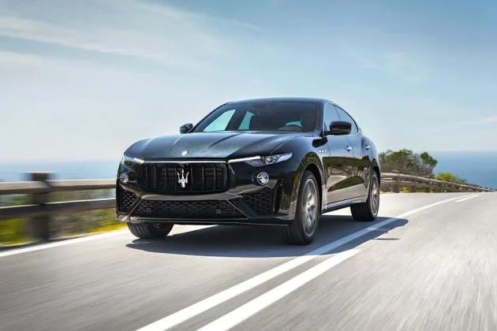

The Maserati Levante is a luxury SUV that combines the performance and elegance Maserati is known for with the practicality of an SUV. It features a stylish design, high-end materials, and advanced technology. Under the hood, it typically offers powerful engine options, including V6 and V8 variants, providing a dynamic driving experience.
The Levante also includes sophisticated suspension systems and a well-appointed interior, with a focus on comfort and performance. It competes in the high-end SUV market, targeting those who want both luxury and sportiness in one vehicle.
The Maserati Levante is designed to blend Maserati's performance heritage with the versatility of an SUV.
Key Features and Details
Engine Options
- The base models come with a twin-turbocharged 3.0-liter V6 engine, offering around 345 to 424 horsepower, depending on the specific variant.Higher trims, like the Levante Trofeo, feature a 3.8-liter twin-turbo V8 engine that delivers around 590 horsepower, providing a more exhilarating driving experience.
Performance
- The Levante can accelerate from 0 to 60 mph in as little as 3.8 seconds in the Trofeo version.It features adaptive air suspension, which adjusts the ride height and stiffness for better handling and comfort. The Levante also has an advanced all-wheel-drive system for improved traction and stability.
Interior and Comfort
- The cabin is crafted with high-quality materials like leather, wood, and aluminum.It includes a sophisticated infotainment system with a large touchscreen, navigation, and smartphone integration. The Levante also offers options for premium audio systems and advanced driver assistance features.
Design
- The Levante has a sleek, sporty design with a distinctive Maserati grille and aggressive lines that emphasize its performance-oriented nature.The interior is spacious for an SUV, providing ample room for passengers and luggage, with a focus on comfort and luxury.
Driving Experience
- The Levante offers a blend of performance and comfort, making it suitable for both spirited driving and everyday use. Its driving dynamics are engineered to provide a balance between sporty handling and a smooth ride.
Customization
- Maserati offers a range of customization options, allowing buyers to tailor the Levante to their preferences with various colors, materials, and features.
Target Audience
- The Maserati Levante is positioned as a luxury SUV that appeals to those seeking high performance, advanced technology, and Italian style in a versatile and practical package.
| Maserati Lavante |
| Top Speed |
187 kmph |
| ARAI Mileage |
12 kmpl |
| Fuel Type |
Petrol |
| Engine Displacement |
2979 cc |
| Max Power |
350bhp@5750rpm |
| Max Torque |
580Nm@2000-5750rpm |
| Transmission Type |
Automatic |
| Fuel Tank Capacity |
80 Litres |
| No. of Cylinders |
6 |
| Boot Space |
580 Litres |